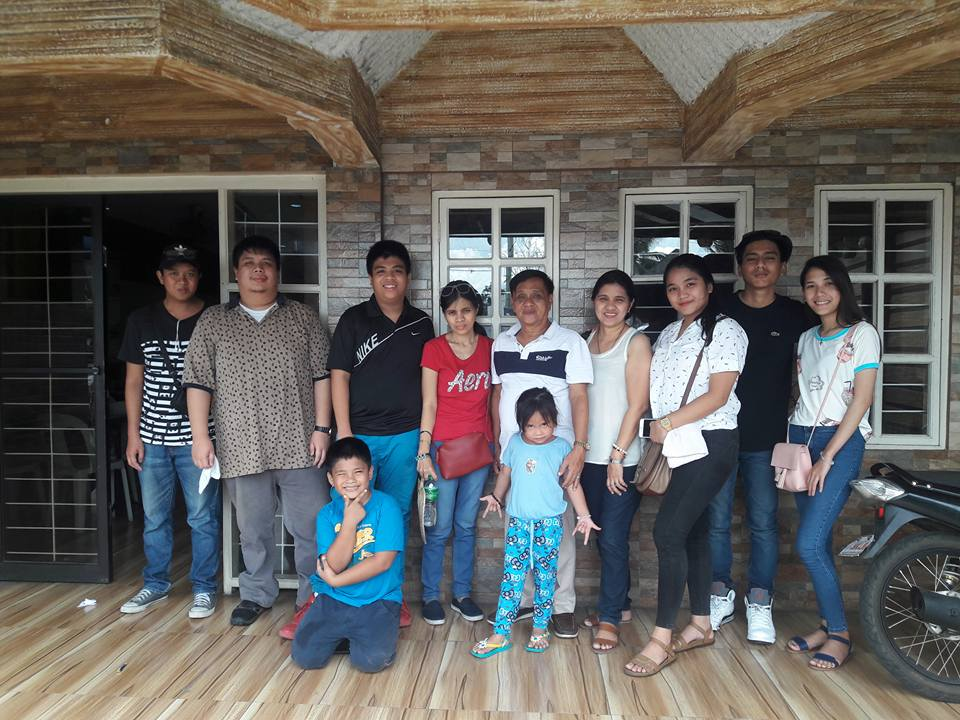

FAMILY
FAMILY
Who really cares for us and endures to the end? The family. So it should always be good for the family. At midday your life when you are strong, good and lots of income, love your family. Enjoy them. Do not leave or leave. As you grow older, they will also be patient with you. Even then our family has always been together in good times and bad times. Each of everyone joins reunions even my grandparents, they have a tradition of customizing organizing events in every important gathering. Since then losing my late-grandmother recently has not lost our family's unity, nor everyone losing one's hope. Our grandfather was always there in our family to be neutral if there is any change or conflict between our parents.
Close family ties. Blessing or burden? What happens when family member just becomes shameless? What can be done with relatives who are incapable of borrowing, soliciting, harassing and abusing? How could you give to family but not steal from yourself? These are the questions sometimes get into my mind or shall I say every single time.

So far we are happy even though we are simply living. My grandparents advocated the foundation of our family that they did not neglect our parents who were struggling with difficulty. We work together and do not neglect us when it comes to emergency and problems. I can not just forget the time where my grandmother was lying in the hospital and passed away the first time I saw such a scenario there I saw the warmth of unity we were sealing and steady at that time. The family is happy with the good that God guides carefully and is not neglected.
"The Family prays together stays together"
 PARENTS
PARENTS

The two persistent marriages are binding the power of God at any time inseparable to any problem and deluge in life. I have seen my parents fight many times but only temporarily tensure and have peace with each other again. Perhaps it is the result of God's guidance not extending to the extreme. My parents 'love affair with four offspring and they adopted a cute little girl, my parents' guidance and care for each of our siblings did not disappear. Sometimes I found them helping me get up to start school again they did not grow angry and hurt me they continued to love me and guided me. We always go to church every Sunday and go outside to eat, roadtrip and relax for a short time.
Being a good son if you know yourself how to honor your parents, And as a son, you should not be looking for something you know that your parents can not afford, be enough and satisfied with your future. Giving thanks to the God the Father, who has been given the good parent, no matter Material, is full of the parents' lesson and love.
 Every morning I wake up to help my mother cook at our breakfast. Sometimes I also help her wash our clothes every weekend. As a son I do all my responsibility to do well with my parents.
I love my parents because I see their difficulties so that we can get good and orderly lives. So as a good son I wants to help them and give them a good life. So I was stubborn in my studies. In with my brothers and sisters we promise that all the difficulties and hardwork whether we are now born out of our parent's love and patience with us. Thank God day by day and He cares for my parents mind and soul to have a beautiful and healthy body.
Every morning I wake up to help my mother cook at our breakfast. Sometimes I also help her wash our clothes every weekend. As a son I do all my responsibility to do well with my parents.
I love my parents because I see their difficulties so that we can get good and orderly lives. So as a good son I wants to help them and give them a good life. So I was stubborn in my studies. In with my brothers and sisters we promise that all the difficulties and hardwork whether we are now born out of our parent's love and patience with us. Thank God day by day and He cares for my parents mind and soul to have a beautiful and healthy body.
"Blessed are those who are persecuted because of their obedience to the will of God, for they will be in the kingdom of heaven."
 LOVE
LOVE
Man lives not for himself, One of God's most precious gifts to us is his precious love. He gave his only child to redeem our sins, the man learned to love no substitute. Inside the family is seeing true love because the Family is sealed by God's loving presence.
Love is freely offered free of charge to worthy people, if your cultivation is love for others as well as they will return to you. Whatever money is pure love and sincerity, There are many aspects people need to learn when it comes to love as many try and try to kill just because of love. It's too sharp and it's hard to get hurt in the affair of two lovers.
Love comes unexpectedly in any way. Love does not make it easy if priority is imbalance. The stronger the seek of success, the more earnest looking in life can be achieved if the search is not in a hurry.
 MONEY
MONEY

Nowadays the money is very important to the needs of the family. But the people are still down because of the huge tax that the government charges. Restricted belts can not breathe because of the height of the goods, even at the top of the fare and will be charged.
The poor Filipinos are increasingly facing poverty. Even a capable to spend living person feels anxious to spend more because of taxes and additional charges. I'm so amazed that most people get along with me even less in life and no money still smiles and goes on in life, as well as within our family is often the issue of money but our union is immovable.
So I accumulated some money for more practical expenses. It's fine and I do not have any luxury and noble things to spend of, Unlike other rich people more resources but only wasting money and wealth unpleasant.